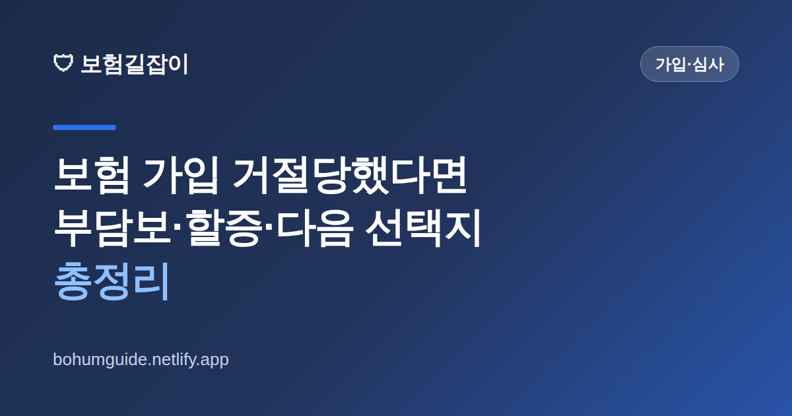

보험 가입 거절(인수거절) 당했다면? 부담보·할증·다음 선택지 총정리
"청약이 거절됐습니다"라는 연락을 받으면 당황스럽습니다. 내가 문제가 있는 사람인가 싶고, 앞으로 어떤 보험도 못 드는 건 아닌지 걱정됩니다. 하지만 거절은 끝이 아니라 조건을 다시 맞추는 출발점인 경우가 많습니다. 무엇을 확인하고 어떻게 움직여야 하는지 정리했습니다.

✍️ 편집자 참고: 본 글은 초안입니다. 인수 기준·조건부 인수 방식은 보험사와 상품마다 다르고 수시로 바뀌니, 게시 전 금융감독원·협회 최신 안내로 검수해 주세요.
보험은 청약(가입 신청)을 한다고 자동으로 계약이 되는 것이 아닙니다. 보험사가 위험을 평가해 받아들일지 판단하는 인수심사(언더라이팅)를 거칩니다. 이 과정에서 거절되거나, 조건을 붙여 승낙되기도 합니다. 중요한 것은 거절 통보를 받았을 때 그냥 포기하거나, 반대로 아무 데나 다시 넣어 보는 것 둘 다 좋지 않다는 점입니다.
거절에도 종류가 있다 — '완전 거절'만 있는 게 아니다
많은 분이 "거절 = 가입 불가"로 이해하지만, 실제 심사 결과는 여러 갈래입니다. 내 통보서가 어느 쪽인지 아는 것이 첫걸음입니다.
| 결과 | 의미 | 내 선택 |
|---|---|---|
| 표준 인수 | 조건 없이 그대로 승낙 | 그대로 계약 진행 |
| 부담보(부분 보장 제외) | 특정 부위·질병을 일정 기간(또는 계속) 보장에서 제외하고 승낙 | 제외 범위·기간을 확인 후 수용 여부 결정 |
| 보험료 할증 | 위험이 높다고 보고 보험료를 더 받는 조건으로 승낙 | 할증 폭과 보장 가치를 비교해 판단 |
| 인수 거절 | 해당 상품으로는 받아들이지 않음 | 다른 상품·경로(간편심사 등) 검토 |
즉 부담보나 할증은 '거절'이 아니라 '조건부 승낙'입니다. 예를 들어 무릎 치료 이력 때문에 무릎 관련만 일정 기간 제외되고 나머지는 정상 보장된다면, 그 계약이 나에게 여전히 쓸모 있을 수 있습니다. 반대로 내가 가장 필요로 했던 보장이 통째로 빠졌다면 다시 생각해야 합니다. 조건부 승낙서를 받으면 "무엇이, 얼마 동안 빠지는지"를 문서로 정확히 확인하는 것이 핵심입니다.
왜 거절됐는지부터 확인하세요
거절 사유를 모른 채 다른 회사에 반복해서 넣는 것은 비효율적입니다. 일반적으로 인수 판단에 영향을 주는 요소는 최근 진료·투약 이력, 입원·수술 경험, 건강검진 결과, 직업의 위험도, 나이 등입니다. 특히 최근에 검사를 받고 결과를 기다리는 중이거나 추적 관찰이 진행 중이면, 상태가 확정되지 않아 보류·거절되는 경우가 흔합니다.
이때 중요한 것이 있습니다. 거절을 피하려고 병력을 숨기고 다시 청약하는 것은 절대 금물입니다. 당장은 통과될지 몰라도 나중에 보험금을 청구할 때 문제가 되어 계약이 해지되거나 보험금을 받지 못할 수 있습니다. 자세한 위험은 보험 고지의무 위반, 어떤 불이익이 있을까에서 확인하세요.
가장 흔한 실수
"거절당했으니 이번엔 아픈 얘기 빼고 넣어보자"가 최악의 선택입니다. 고지의무 위반은 거절보다 훨씬 큰 손해로 돌아옵니다. 정직하게 알리고 조건부라도 받는 편이, 나중에 보장을 못 받는 계약보다 낫습니다.
거절 이후 현실적인 선택지
한 곳에서 거절됐다고 모든 보험이 막힌 것은 아닙니다. 인수 기준은 보험사마다, 상품마다 다릅니다. 상황에 따라 다음 경로를 검토할 수 있습니다.
- 다른 보험사·다른 상품 확인 — 같은 이력도 회사별로 판단이 다를 수 있음
- 간편심사(유병자) 보험 검토 — 고지 항목이 적은 대신 보험료가 높은 편
- 부담보 조건 수용 — 문제 부위만 빼고 나머지 보장을 확보하는 현실적 절충
- 시간을 두고 재시도 — 치료가 끝나고 경과가 안정되면 조건이 좋아질 수 있음
- 이미 가진 보장부터 점검 — 새로 못 들면 기존 계약을 지키는 것이 더 중요
특히 유병 이력이 있다면 간편심사 상품의 구조를 먼저 이해하는 것이 좋습니다. 고지 항목이 적어 가입은 쉽지만 보험료·보장 면에서 차이가 있으므로, 유병자보험(간편심사보험) 총정리를 통해 일반 상품과 무엇이 다른지 비교해 보세요. 또한 이미 유지 중인 계약이 있다면 새 가입이 확정되기 전에 기존 보험을 먼저 해지하지 마세요. 갈아타기의 위험은 보험 리모델링, 무작정 갈아타면 안 되는 이유에서 다룹니다.
실전 체크 & 요약
정리하면 이렇게 움직이면 됩니다. 첫째, 통보서를 열어 완전 거절인지 조건부 승낙(부담보·할증)인지 구분합니다. 둘째, 조건부라면 제외 범위와 기간을 확인해 그 계약이 여전히 내게 필요한지 따집니다. 셋째, 완전 거절이면 다른 회사·간편심사 상품·시간을 둔 재시도를 검토합니다. 넷째, 어떤 경우에도 병력을 숨기지 않습니다.
- 거절 통보 = 끝이 아님, 조건부 승낙일 가능성부터 확인
- 부담보는 무엇이 얼마 동안 빠지는지를 문서로 확인
- 인수 기준은 보험사·상품마다 다르다 — 한 곳 결과가 전부가 아님
- 고지의무 위반은 거절보다 큰 손해 — 숨기지 말 것
- 새 계약 확정 전 기존 보험 먼저 해지 금지
참고할 수 있는 공신력 있는 자료
- 금융감독원 — 보험 계약·인수심사 관련 소비자 안내
- 파인(금융소비자 정보포털) — 내 보험 가입 내역 조회
- 생명보험협회 — 생명보험 상품·공시 정보
본 정보는 일반적인 안내이며, 인수 기준과 조건부 인수 내용은 각 보험사 약관·심사 결과와 금융감독원 등 관계기관을 통해 반드시 확인하시기 바랍니다.